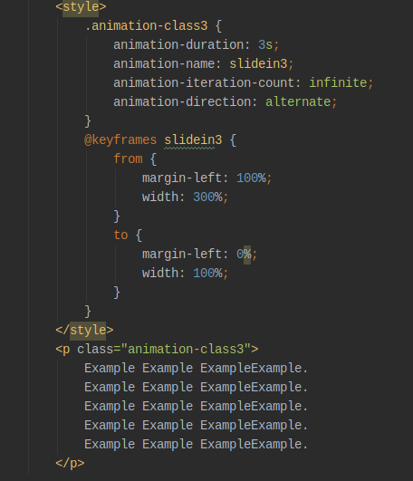

This simple example styles the <p> element so that the text slides in from off the right edge of the browser window.
Example Example ExampleExample.
CSS animations make it possible to animate transitions from one CSS style configuration to another. Animations consist of two components, a style describing the CSS animation and a set of keyframes that indicate the start and end states of the animation’s style, as well as possible intermediate waypoints. There are three key advantages to CSS animations over traditional script-driven animation techniques:
This simple example styles the <p> element so that the text slides in from off the right edge of the browser window.
Example Example ExampleExample.
Let’s add another keyframe to the previous example’s animation. Let’s say we want the header’s font size to increase as it moves from right to left for a while, then to decrease back to its original size. That’s as simple as adding this keyframe:
Example Example ExampleExample.
That made it repeat, but it’s very odd having it jump back to the start each time it begins animating. What we really want is for it to move back and forth across the screen. That’s easily accomplished by setting animation-direction to alternate:
Example Example ExampleExample. Example Example ExampleExample. Example Example ExampleExample. Example Example ExampleExample. Example Example ExampleExample.